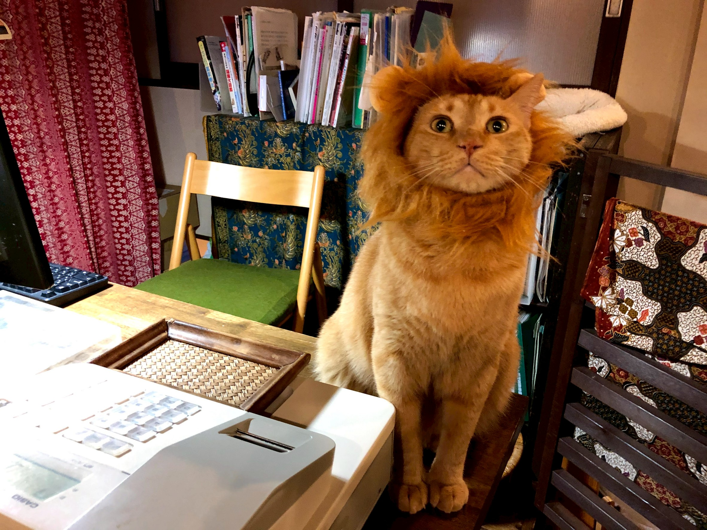

予約について
ご予約はお電話のみでお願い致します。その際に、来店希望日時、滞在時間、人数、駐車場ご利用の有無、をお伝えください。お子様がいらっしゃる場合は年齢もお知らせください。
0467-40-5379Contact & Access
ご予約はお電話のみでお願いいたします。その他のお問い合わせは、お電話またはEメールでお願いいたします。
ご予約はお電話のみでお願い致します。その際に、来店希望日時、滞在時間、人数、駐車場ご利用の有無、をお伝えください。お子様がいらっしゃる場合は年齢もお知らせください。
0467-40-5379保護猫の相談はEメールでお送りください。
kamakuranekonoma@gmail.comAccess
鎌倉ねこの間は、鎌倉大仏近くの静かな住宅地にあります。迷われた場合はお電話ください。
鎌倉駅と藤沢駅を結ぶ江ノ電バス・京浜急行バスの『打越（うちこし）』バス停下車徒歩3分です。
注！神奈中バスの「打越（うちこし）」バス停ではありませんのでお気を付けください。
専用駐車場が1台あります。ご予約の際に必ずお申し出下さい。
近隣にコインパーキングはございません。路上駐車は厳禁です。
